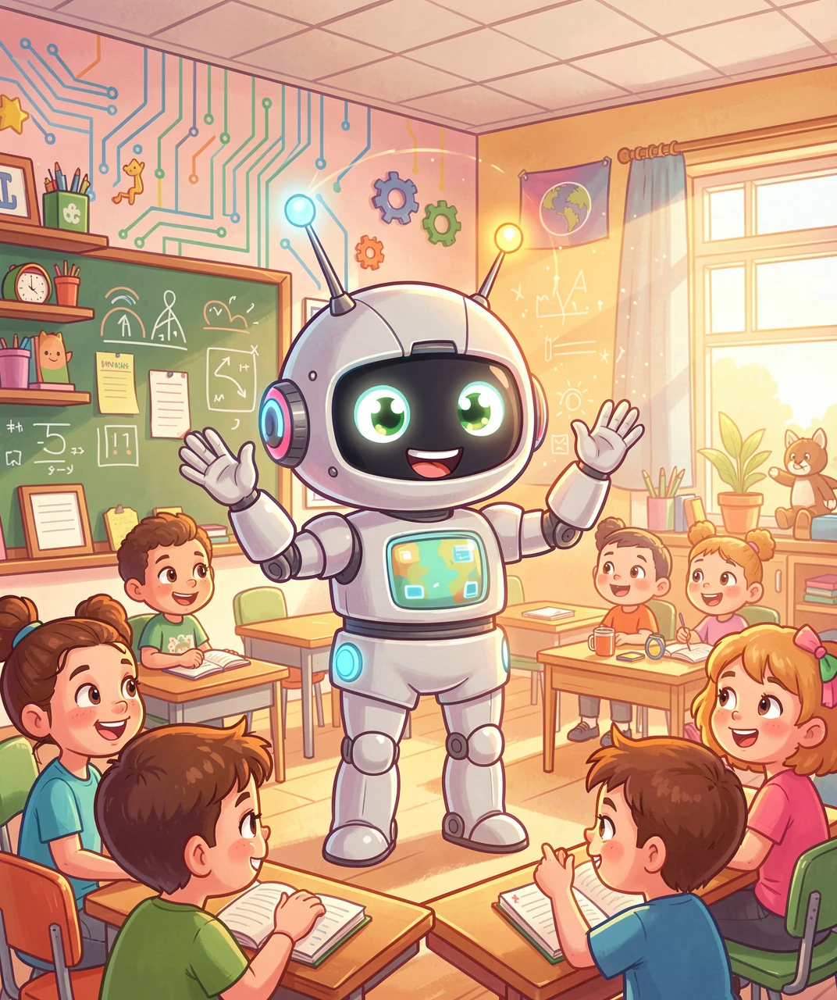
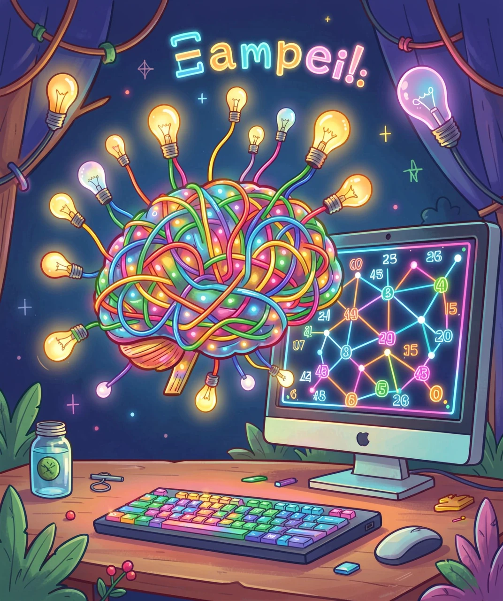
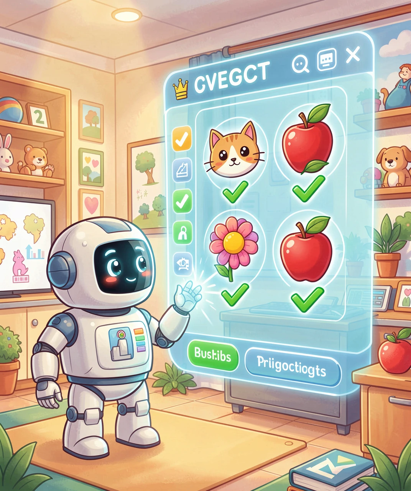
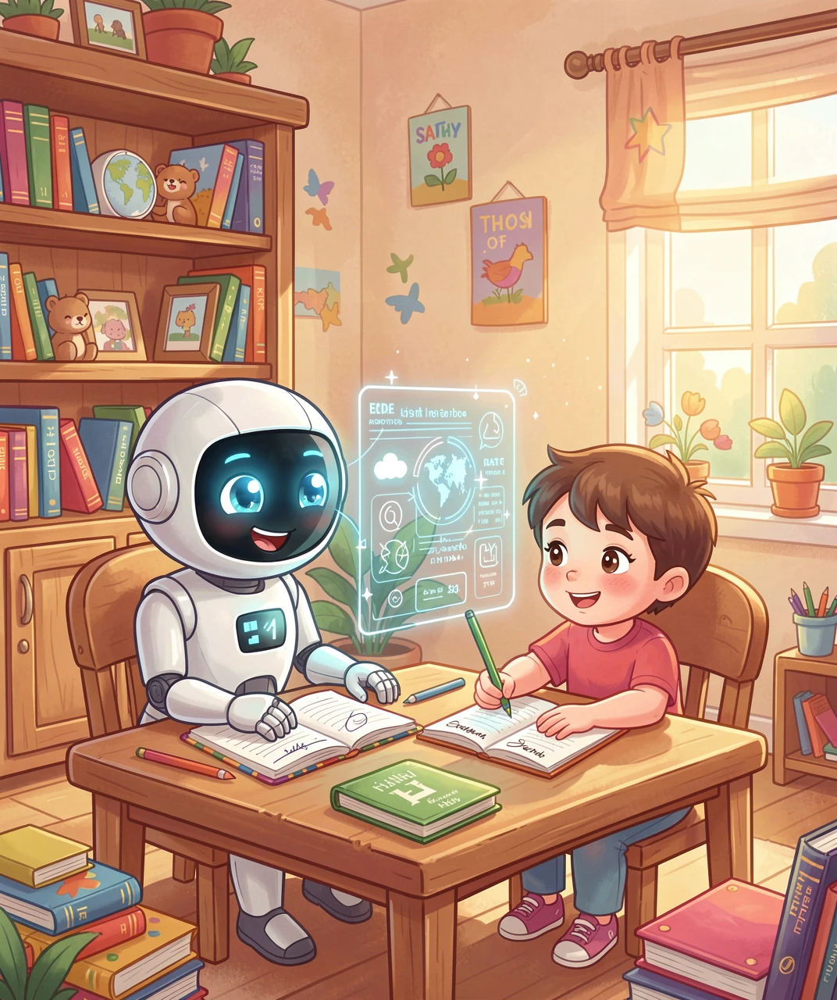
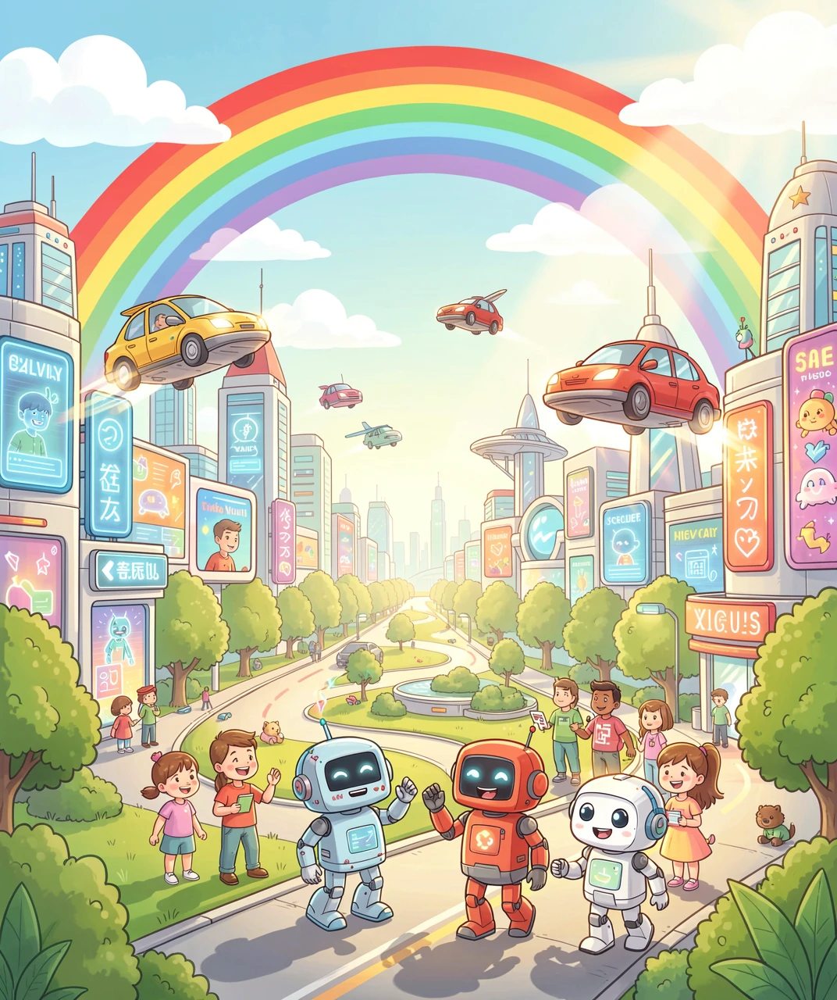

—— 小朋友的第一堂 AI 课

📷 图1：AI世界里的可爱机器人朋友 🤖
小朋友们，你们有没有想过，电脑和机器人也可以像人一样"思考"和学习呢？这就是人工智能，也叫 AI（Artificial Intelligence）！
人工智能就像给计算机装上了一个"聪明的大脑"。它可以看图片、听声音、说对话，甚至还能帮你找到喜欢的动画片！
小朋友们学知识要上课看书，AI 也有自己的"学习方式"！科学家们给 AI 看了成千上万张猫的图片，AI 就会慢慢认识猫长什么样子了。这个过程叫做机器学习。

📷 图2：AI的"大脑"是由无数个小灯泡组成的神经网络 💡
想象一下，AI 的大脑里有很多很多"小灯泡"（叫做神经元），它们连在一起，形成了神经网络。当 AI 看到新东西时，这些小灯泡就会一起"想办法"，告诉 AI 这到底是什么！
其实 AI 早就悄悄出现在我们生活里了！当你对手机说"嘿，Siri"或"小爱同学"的时候，就是 AI 在听你说话哦！

📷 图3：AI能认出图片里的猫、狗、花和苹果 🔍
还有很多地方都有 AI 的身影：拍照时 AI 会自动识别人脸、翻译软件帮你把中文变成英文、推荐你喜欢的动画片……是不是很神奇？
现在的 AI 已经很聪明了，但它和真正的人类大脑还有很大区别。AI 擅长做特定的任务，比如下棋、认图片，但它没有真正的"感觉"和"情绪"。

📷 图4：AI小助手和人类一起学习做作业 ✏️
AI 不知道什么是开心、什么是难过，也没有真正的想象力。所以小朋友们不用担心，AI 是工具，就像铅笔和橡皮一样，是用来帮助我们的！
未来的 AI 会变得更厉害！它可能会帮医生更快发现疾病、帮科学家探索火星、帮我们保护环境……

📷 图5：人类和机器人一起生活的未来城市 🚀
说不定将来最厉害的 AI 科学家，就是正在看这篇文章的你呢！从今天开始，多学习、多思考，说不定未来的 AI 就由你来发明！